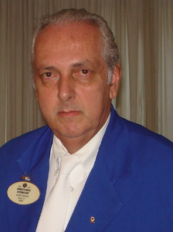
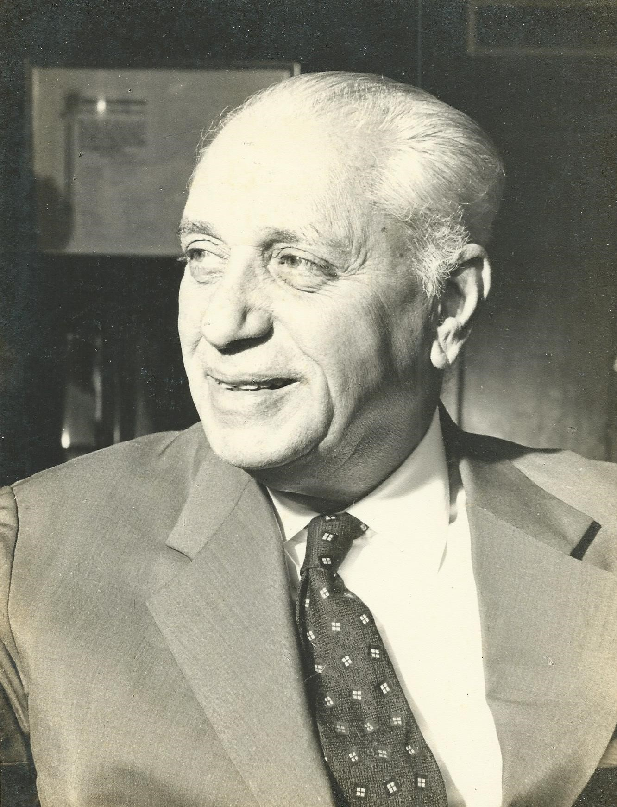

E R Bittencourt Consultoria de Operações é uma empresa nova, mas que nasceu com o objetivo de ajudar rodovias em sua gestão e terceirização de serviços especializados para o melhor funcionamento da mesma.
O sócio proprietário, Edmundo Regis Bittencourt, criou a empresa através da influência profissional que teve de seu pai e de seu avô paterno, dois grandes engenheiros rodoviários.


Roberto Regis Bittencourt, pai do fundador Edmundo, trabalhou mais de 25 anos na Construtora Andrade Gutierrez, na área comercial da construtora e nas concessionárias CCR Ponte Rio-Niterói e CCR Nova Dutra.
Já, Edmundo Régis Bittencourt, avô do fundador da empresa, trabalhou na direção geral do Departamento Nacional de Estrada de Rodagem - DNER (órgão público rodoviário anterior ao Departamento Nacional de Infraestrutura Terrestre - DNIT) nos tempos áureos da expansão da malha rodoviária no Brasil, e ainda exerceu o mandato de prefeito na cidade de Itaperuna.
Edmundo Regis Bittencourt, com toda a influência citada acima teve sua carreira profissional no ramo de concessões de rodovias, com mais de 20 anos de experiência, trabalhado em grandes empresas, tais como CCR Ponte Rio-Niterói, CONCER, Autopista Fluminense e Via Brasil MT.
Na concessionária Via Brasil MT, trabalhou na modalidade de pessoa jurídica, tendo executado os serviços de trabalhos iniciais de manutenção/conservação e todo o processo de implantação dos sistemas operacionais (Pedágio, CCO, SAU-Mecânico, SAU-Médico, radiofonia, implantação de uma rede fibra óptica e subsistemas de ITS) e toda sua gestão operacional.
Edmundo Regis Bittencourt, é um Engenheiro Civil que com uma grande influência familiar e um histórico profissional trabalhando em grandes empresas resolveu empreender para levar melhoria as estradas.
Graduado pela Universidade Santa Úrsula no curso Engenharia Civil, tendo concluído em 1995.
Especializado pela Fundação Getúlio Vargas/FGV no curso de Administração de Empresas e Gestão de Negócios, tendo concluído em 2001.
No atual momento, está se capacitando através de dois cursos de pós-graduação, Engenharia de Segurança do Trabalho e Engenharia de Transporte Rodoviário.